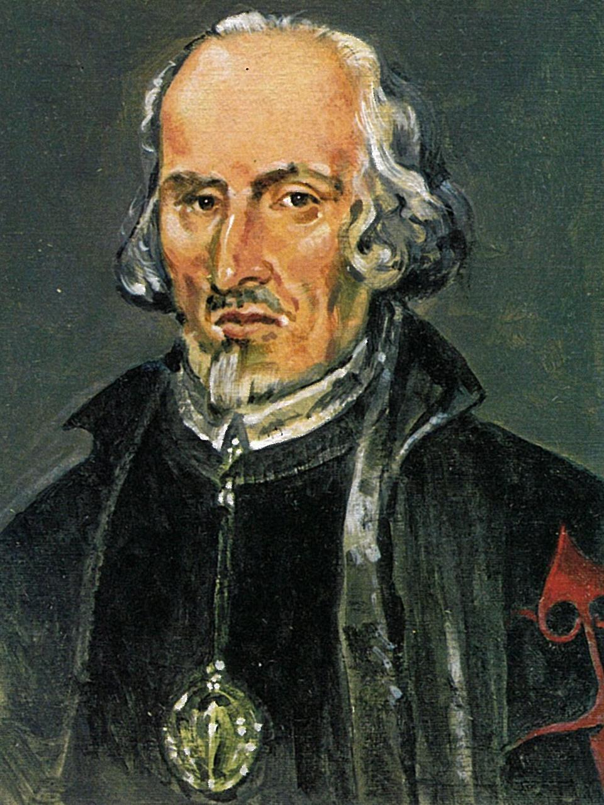
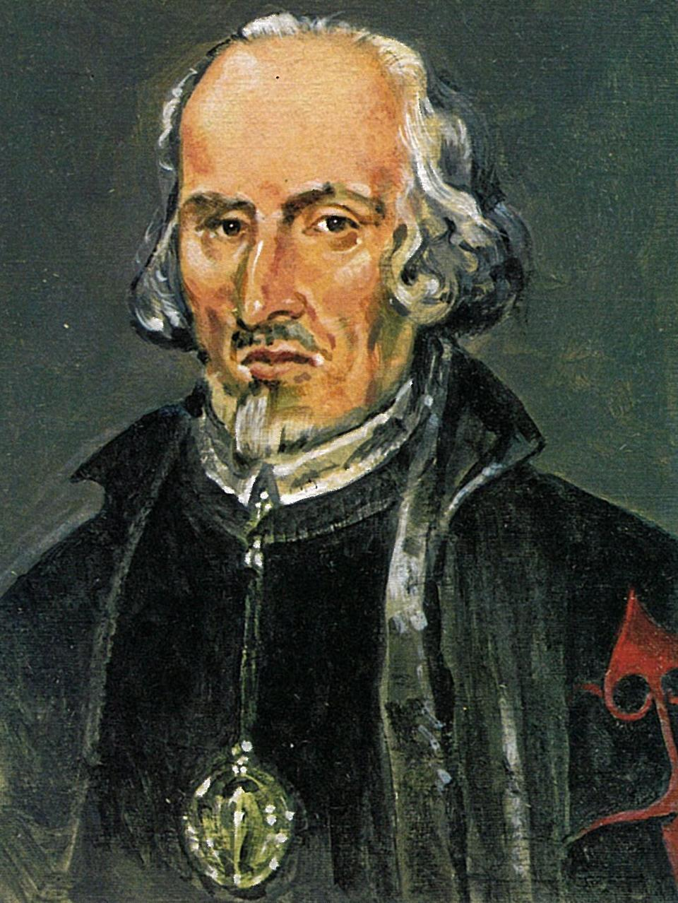

El teatro de Calderón de la Barca


Pedro Calderón de la Barca (1600-1681) es el segundo gran genio barroco que ocupa la escena teatral española durante el siglo XVII. Si Lope había copado los aplausos y los escenarios hasta la década de los treinta, Calderón ocupará este sitio hasta los años cincuenta del siglo, aunque con un teatro mucho más culto y cortesano que el del Fénix.
Su vida fue mucho menos azarosa que la de Lope de Vega, y fuera de algunos incidentes más o menos graves en su juventud –participación en duelos y alborotos callejeros- pronto se dedicó exclusivamente a la escritura de obras dramáticas, pues Calderón no practicó otros géneros que el del teatro. Le llegó pronto el éxito y el reconocimiento, especialmente el del rey Felipe IV, en cuya corte y palacio representaría de forma constante desde la década de los treinta. A este período pertenecen sus mejores obras.
Participa activamente en la milicia hacia 1640, y se ordena sacerdote en 1651, dando satisfacción así a un carácter siempre reflexivo, un tanto pesimista y muy religioso. Recibe otros favores reales y muere finalmente en Madrid en 1681.
Su obra parte de la de Lope, y un numeroso grupo de sus comedias tienen los mismos motivos y temática que la del Fénix: el honor, la honra, los enredos amorosos, las historias y leyendas nacionales, etc. Es sin embargo en las tragedias donde el genio de Calderón se hace notar: los personajes son mucho más graves, más reflexivos, más profundos y, sobre todo, más creíbles porque se mueven en la duda, en la contradicción, no son meros estereotipos.
Su producción dramática suele dividirse en los siguientes tipos de obras:
Sus obras se caracterizan por:
Obra publicada con Licencia Creative Commons Reconocimiento Compartir igual 4.0